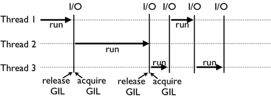

首页 > 编程笔记
Python GIL全局解释器锁详解（深度剖析）
通过前面的学习，我们了解了 Pyton 并发编程的特性以及什么是多线程编程。其实除此之外，Python 多线程还有一个很重要的知识点，就是本节要讲的 GIL。
GIL，中文译为全局解释器锁。在讲解 GIL 之前，首先通过一个例子来直观感受一下 GIL 在 Python 多线程程序运行的影响。
首先运行如下程序：
在我们的印象中，使用多个（适量）线程是可以加快程序运行效率的，因此可以尝试将上面程序改成如下方式：
那么，什么是 GIL 呢？GIL 是最流程的 CPython 解释器（平常称为 Python）中的一个技术术语，中文译为全局解释器锁，其本质上类似操作系统的 Mutex。GIL 的功能是：在 CPython 解释器中执行的每一个 Python 线程，都会先锁住自己，以阻止别的线程执行。
当然，CPython 不可能容忍一个线程一直独占解释器，它会轮流执行 Python 线程。这样一来，用户看到的就是“伪”并行，即 Python 线程在交替执行，来模拟真正并行的线程。
有读者可能会问，既然 CPython 能控制线程伪并行，为什么还需要 GIL 呢？其实，这和 CPython 的底层内存管理有关。
CPython 使用引用计数来管理内容，所有 Python 脚本中创建的实例，都会配备一个引用计数，来记录有多少个指针来指向它。当实例的引用计数的值为 0 时，会自动释放其所占的内存。
举个例子，看如下代码：
假设有两个 Python 线程同时引用 a，那么双方就都会尝试操作该数据，很有可能造成引用计数的条件竞争，导致引用计数只增加 1（实际应增加 2），这造成的后果是，当第一个线程结束时，会把引用计数减少 1，此时可能已经达到释放内存的条件（引用计数为 0），当第 2 个线程再次视图访问 a 时，就无法找到有效的内存了。
所以，CPython 引进 GIL，可以最大程度上规避类似内存管理这样复杂的竞争风险问题。
上面这张图，就是 GIL 在 Python 程序的工作示例。其中，Thread 1、2、3 轮流执行，每一个线程在开始执行时，都会锁住 GIL，以阻止别的线程执行；同样的，每一个线程执行完一段后，会释放 GIL，以允许别的线程开始利用资源。
读者可能会问，为什么 Python 线程会去主动释放 GIL 呢？毕竟，如果仅仅要求 Python 线程在开始执行时锁住 GIL，且永远不去释放 GIL，那别的线程就都没有运行的机会。其实，CPython 中还有另一个机制，叫做间隔式检查（check_interval），意思是 CPython 解释器会去轮询检查线程 GIL 的锁住情况，每隔一段时间，Python 解释器就会强制当前线程去释放 GIL，这样别的线程才能有执行的机会。
注意，不同版本的 Python，其间隔式检查的实现方式并不一样。早期的 Python 是 100 个刻度（大致对应了 1000 个字节码）；而 Python 3 以后，间隔时间大致为 15 毫秒。当然，我们不必细究具体多久会强制释放 GIL，读者只需要明白，CPython 解释器会在一个“合理”的时间范围内释放 GIL 就可以了。
整体来说，每一个 Python 线程都是类似这样循环的封装，来看下面这段代码：
比如，运行如下代码：
GIL，中文译为全局解释器锁。在讲解 GIL 之前，首先通过一个例子来直观感受一下 GIL 在 Python 多线程程序运行的影响。
首先运行如下程序：
import time
start = time.clock()
def CountDown(n):
while n > 0:
n -= 1
CountDown(100000)
print("Time used:",(time.clock() - start))
运行结果为：
Time used: 0.0039529000000000005
在我们的印象中，使用多个（适量）线程是可以加快程序运行效率的，因此可以尝试将上面程序改成如下方式：
import time
from threading import Thread
start = time.clock()
def CountDown(n):
while n > 0:
n -= 1
t1 = Thread(target=CountDown, args=[100000 // 2])
t2 = Thread(target=CountDown, args=[100000 // 2])
t1.start()
t2.start()
t1.join()
t2.join()
print("Time used:",(time.clock() - start))
运行结果为：
Time used: 0.006673
可以看到，此程序中使用了 2 个线程来执行和上面代码相同的工作，但从输出结果中可以看到，运行效率非但没有提高，反而降低了。是不是和你猜想的结果不一样？事实上，得到这样的结果是肯定的，因为 GIL 限制了 Python 多线程的性能不会像我们预期的那样。如果使用更多线程进行尝试，会发现其运行效率和 2 个线程效率几乎一样（本机器测试使用 4 个线程，其执行效率约为 0.005）。这里不再给出具体测试代码，有兴趣的读者可自行测试。
那么，什么是 GIL 呢？GIL 是最流程的 CPython 解释器（平常称为 Python）中的一个技术术语，中文译为全局解释器锁，其本质上类似操作系统的 Mutex。GIL 的功能是：在 CPython 解释器中执行的每一个 Python 线程，都会先锁住自己，以阻止别的线程执行。
当然，CPython 不可能容忍一个线程一直独占解释器，它会轮流执行 Python 线程。这样一来，用户看到的就是“伪”并行，即 Python 线程在交替执行，来模拟真正并行的线程。
有读者可能会问，既然 CPython 能控制线程伪并行，为什么还需要 GIL 呢？其实，这和 CPython 的底层内存管理有关。
CPython 使用引用计数来管理内容，所有 Python 脚本中创建的实例，都会配备一个引用计数，来记录有多少个指针来指向它。当实例的引用计数的值为 0 时，会自动释放其所占的内存。
举个例子，看如下代码：
>>> import sys
>>> a = []
>>> b = a
>>> sys.getrefcount(a)
3
假设有两个 Python 线程同时引用 a，那么双方就都会尝试操作该数据，很有可能造成引用计数的条件竞争，导致引用计数只增加 1（实际应增加 2），这造成的后果是，当第一个线程结束时，会把引用计数减少 1，此时可能已经达到释放内存的条件（引用计数为 0），当第 2 个线程再次视图访问 a 时，就无法找到有效的内存了。
所以，CPython 引进 GIL，可以最大程度上规避类似内存管理这样复杂的竞争风险问题。
Python GIL底层实现原理

图 1 GIL 工作流程示意图
图 1 GIL 工作流程示意图
上面这张图，就是 GIL 在 Python 程序的工作示例。其中，Thread 1、2、3 轮流执行，每一个线程在开始执行时，都会锁住 GIL，以阻止别的线程执行；同样的，每一个线程执行完一段后，会释放 GIL，以允许别的线程开始利用资源。
读者可能会问，为什么 Python 线程会去主动释放 GIL 呢？毕竟，如果仅仅要求 Python 线程在开始执行时锁住 GIL，且永远不去释放 GIL，那别的线程就都没有运行的机会。其实，CPython 中还有另一个机制，叫做间隔式检查（check_interval），意思是 CPython 解释器会去轮询检查线程 GIL 的锁住情况，每隔一段时间，Python 解释器就会强制当前线程去释放 GIL，这样别的线程才能有执行的机会。
注意，不同版本的 Python，其间隔式检查的实现方式并不一样。早期的 Python 是 100 个刻度（大致对应了 1000 个字节码）；而 Python 3 以后，间隔时间大致为 15 毫秒。当然，我们不必细究具体多久会强制释放 GIL，读者只需要明白，CPython 解释器会在一个“合理”的时间范围内释放 GIL 就可以了。
整体来说，每一个 Python 线程都是类似这样循环的封装，来看下面这段代码：
for (;;) {
if (--ticker < 0) {
ticker = check_interval;
/* Give another thread a chance */
PyThread_release_lock(interpreter_lock);
/* Other threads may run now */
PyThread_acquire_lock(interpreter_lock, 1);
}
bytecode = *next_instr++;
switch (bytecode) {
/* execute the next instruction ... */
}
}
从这段代码中可以看出，每个 Python 线程都会先检查 ticker 计数。只有在 ticker 大于 0 的情况下，线程才会去执行自己的代码。Python GIL不能绝对保证线程安全
注意，有了 GIL，并不意味着 Python 程序员就不用去考虑线程安全了，因为即便 GIL 仅允许一个 Python 线程执行，但别忘了 Python 还有 check interval 这样的抢占机制。比如，运行如下代码：
import threading
n = 0
def foo():
global n
n += 1
threads = []
for i in range(100):
t = threading.Thread(target=foo)
threads.append(t)
for t in threads:
t.start()
for t in threads:
t.join()
print(n)
执行此代码会发现，其大部分时候会打印 100，但有时也会打印 99 或者 98，原因在于 n+=1 这一句代码让线程并不安全。如果去翻译 foo 这个函数的字节码就会发现，它实际上是由下面四行字节码组成：
>>> import dis
>>> dis.dis(foo)
LOAD_GLOBAL 0 (n)
LOAD_CONST 1 (1)
INPLACE_ADD
STORE_GLOBAL 0 (n)
关注公众号「站长严长生」，在手机上阅读所有教程，随时随地都能学习。内含一款搜索神器，免费下载全网书籍和视频。

微信扫码关注公众号